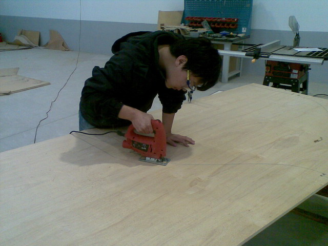
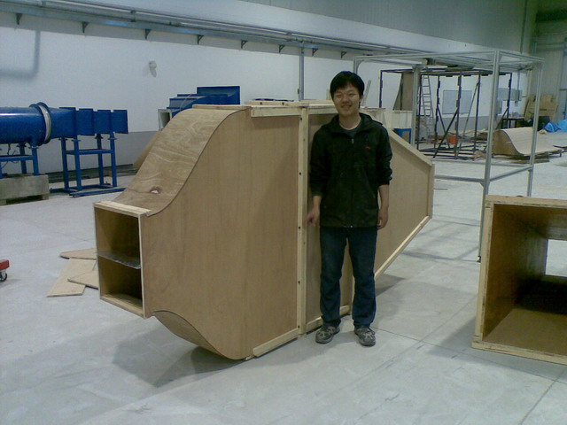
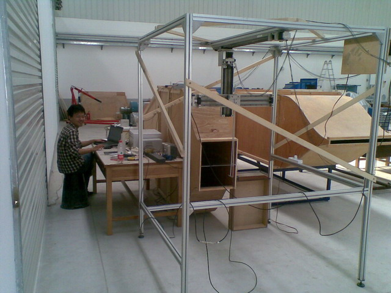

Zhang chuan finished final year project in TCL of DUT in June 2012
理工大学土木工程学院建筑环境专业四年级本科生张川在实验室完成以“自然风场实验研究”为题的本科毕业论文，论文由实验室高南老师和土木学院端木琳老师共同指导。他在4个月内设计、搭建实验台，完成实验，分析数据整个过程。他发现了控制流场能谱斜率变化的规律。他的最终报告数据丰富，论证详实。张川同学毕业以后将在上海交通大学低温研究所开始攻读硕士学位。他将在2012年7月26号在云南昆明召开的第九届全国流动显示大会上宣读自己的发现。 Fourth year HVAC student Zhang Chuan finished his final year project entitled "Passive flow control of a mixing layer" in the turbulence control lab under supervision of Dr. Gao. He designed and fabricated an experimental setup and carried out measurements and data analysis. He found the slope of the power spectra of the fluctuating velocity in a mixing layer changed with the velocity ratio between the two streams, and the slope can be modified using an array of vortex generators. His report was highly regarded by the examiners and won an excellent undergradute theis award (2 out of 60). Mr. Zhang will present his findings in the 9th national flow visualization conference in Kunming on July 26 2012, the conference is held by China Aerodynamics Research Society. |
Flow visualization image of mixing layer with a velocity ratio of 2, taken by Zhagn Chuan in June 2012 |
 |
|
|  | |
|  |